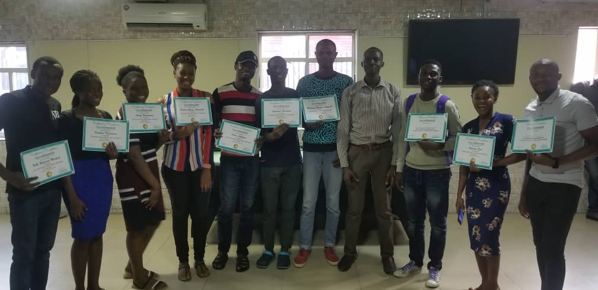

2020 University of Lagos, Akoka.
• B.Sc (Hons) (Computer science)
2015 Total light College, Ikorodu.
• West African Examination Council Certificate
2019 CISCO ROUTING AND SWITCHING TRAINING
• Genius Connect training centre
Experience

DOUGLO ENTERPRISE - 2016
I attended a 3-months computer training which increased my knowledge on Microsoft word, Microsoft excel, Microsoft access point, and Basics of Html. Due to fast learning, I was opportune to be transferred to a higher class where I learnt the basics of CorelDraw and Photoshop.
EDEN CENTER - 2017
I attended a one-week web development training. At the end of the training, I was able to build a BMI calculator used for calculating Body Mass Index using html, CSS and JavaScript.
KINGDOM ECHOES - 2019
I am a writer for Kingdom Echoes Blog.
GIRL CODE ACADEMY - 2018
I attended a 10-weeks training on web development. I was able to have good knowledge of HTML, CSS, JavaScript and little knowledge on MySQL, JQuery and the use of Github. After which I was able to develop a LOG website interface which takes the attendance of student by scanning the QR code on the webpage and stores students information on the database..
GENIUS CONNECT - 2019
I attended a 9-weeks training on Computer Networking. I was exposed to the use of Cisco packet tracer to create Subnetting, VLANS, Open System connection(OSI), Spanning Tree protocol, Routing, EIGRP and OSPF.
IQUBE TECH TRAINING - 2019
I attended a one day master class on Data-science. I was introduced to the basics of data science where we collected reviews from customers and used their comment to improve the product using python IDE (framework- Anaconda).
UNICONNE, LAGOS, NIGERIA.
Front-end Developer Intern – 2018
Worked with Html and CSS in developing some WebPages for Uniconne’s website.
Programming language in Data Science.
MEMBERSHIPS – 2018 till date
Active member, Developer Student Club Unilag.
VOLUNTEER PROJECT
Techplus (2017)
Personal Projects(HTML, CSS and JavaScript)
-Banking Application - 2019
I used my knowledge of HTML, CSS and JavaScript to develop a banking application interface.
-Scientific Calculator – 2019
I used my knowledge of HTML, CSS, and JavaScript to develop a scientific calculator.
-Fashion site - 2018
I developed a Fashion site interface named FASHIONOVA using HTML and CSS. This site contains what FASHIONOVA is all about, fashion products and fashion tutorials.
-Helpmate site – 2019
Helpmate firm is a private organization that is developed to help the abused and those who cannot speak up for themselves .I developed it using html and CSS.
Group Project, Python
-Sentiment Analysis
I worked with a group of individuals in developing a program that accesses online comments and reviews about a particular product and determining if the comments and reviews are positive, neutral and negative. The program was developed using Python (framework-Anaconda).
Skills
• Problem Solving
• Good Communication Skills
• Good Listener
• Leadership Skills
• Graphics design
• Excellent Writing Skills.